Digital artist and creative technologist from Leeds, UK, creating digital games, installations and immersive artworks with a socially engaged practice. My work is largely inspired by glitch art, solar punk, worlding, and video games, featuring forests, plants and environmental themes in a variety of contexts across time and space: worlds current, speculative and historic, frequently juxtaposing natural elements with the digital realm. I’m interested in the potential of digital experiences to educate and create explorative, playful and social spaces, particularly in environmental contexts, whilst leaning into game art and glitch aesthetics. practice encapsulates game worlds and the realms that players are traditionally not supposed to see.
cv // exhibitions + festivals
2026
BYOB, Arebyte Gallery (upcoming)
Voidspace Live 2026 (upcoming)
Strange Play by Voidspace at London Games Week (upcoming)
Kaboom Animation Festival Official Game Selection
Zine featured in exhibition ‘Connection Established: Digital Folklore and Web Craft’ at The Photographers’ Gallery.
2025
Prism Festival 2025 (commission)
Playtopia Festival 2025
Voidspace Live 2025
2024
Voidspace Live 2024
2023
Artist in residence at Thin Air: The Beams
Damned Soggy Oat Patch, Goldsmiths University
2022
With Whom We Mutually Communicate, Copeland Gallery
education
MSc Digital Media and Design, Edinburgh College of Art, 2025 (distinction)
BSc Digital Arts Computing, Goldsmiths University, 2023 (first)
Beyond Brontës, Screen Yorkshire (2024)